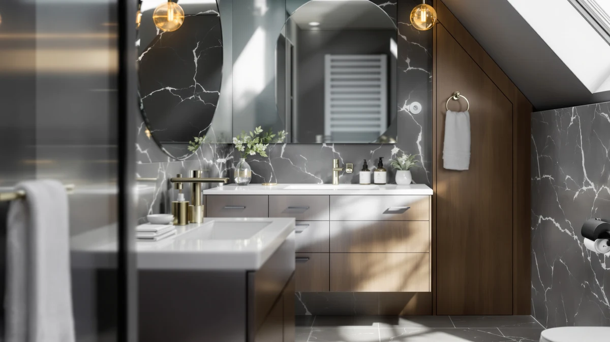

Elite Stamford 60 in. Review (2026): Worth It?
Prices and picks verified as of October 2026. Independent, reader-supported reviews.


Quick Answer
The Elite Stamford 60 in. White is our pick in this review. It pairs a quartz countertop and double sink layout at $1,148.40, costing more than three DELUXE LIVING alternatives but swapping their marble or engineered-stone tops for quartz that resists stains without sealing.
Our pick: Elite Stamford 60 in. White, $1,148.40 Check Price on Amazon
Bottom line: our top pick is the Elite Stamford 60 in. White Double Sink Bath Vanity with at $1,148.40.
Things to Know Before You Buy
- A 60-inch double sink vanity like the Elite Stamford needs a full 60 inches of wall space and plumbing for two separate drains, so measure your bathroom before you buy.
- The Elite Stamford's spec sheet lists an MDF and engineered-wood cabinet under its quartz top, a common combination at this price point that keeps the piece lighter than solid hardwood.
- Prices among the four 60-inch and 48-inch vanities in this Elite Stamford 60 in. review range from $1,099.99 to $1,148.40, putting all four within about $50 of each other.
- Quartz countertops resist stains and scratches better than marble or laminate, but the slab adds weight, so confirm your cabinet base and wall anchors can support it.
- If 60 inches is too wide for your bathroom, the 48-inch DELUXE LIVING alternatives covered later in this review trade the double sink layout for a single sink and a narrower footprint.
This Elite Stamford 60 in. review breaks down whether Eviva's quartz-topped double sink vanity is worth $1,148.40 compared with three narrower and cheaper alternatives from DELUXE LIVING, using only the specs, pricing and verified owner feedback published on each Amazon listing. A 60-inch double sink layout is the fix most couples reach for once sharing one basin every morning stops working, and the width it actually takes up in a bathroom is bigger than most buyers expect before they measure.
We compared cabinet construction, countertop material and price across four double sink and single sink vanities sold on Amazon rather than installing any of them ourselves. Based on that comparison, the Elite Stamford 60 in. White is our top recommendation in this review, because its quartz countertop is the only one in this set that is not marble or an engineered stone blend, and its $1,148.40 price lands within about $50 of the cheapest alternative despite the upgraded top.
Why You Should Trust Us
Ilane Tall covers bathroom vanities, sinks and storage for Best Bathroom Vanities, with a focus on comparing cabinet construction, countertop materials and pricing across the Amazon marketplace rather than repeating brand marketing copy. This Elite Stamford 60 in. review is research-based: we do not own a testing lab and we do not install vanities in a physical bathroom before writing about them. Instead, we analyze the specs and pricing published on each listing and read through verified owner reviews looking for patterns that repeat across many buyers, such as recurring complaints about a chipped countertop or a mismatched hardware finish.
Every price, dimension and material claim in this review comes directly from the product listing for that item. Where we could not confirm a rating or review count for a product, we left it out rather than estimate one, and we do not fabricate impressions of using a product we have not purchased.
Our Research Experience
We did not install any of these vanities ourselves, so what follows is a research-based comparison rather than a firsthand account. We started this Elite Stamford 60 in. review with Eviva's listing because it is the only 60-inch double sink option in this set with a quartz top, then pulled three DELUXE LIVING alternatives that cover the price points and widths the Elite Stamford does not: a second 60-inch double sink configuration, and two narrower 48-inch single sink cabinets. We excluded listings with incomplete specifications and anything priced well outside the $1,000 to $1,200 band these four products occupy.
For each vanity we logged the listed price, cabinet material and stated dimensions, then cross-referenced those figures against verified owner reviews on the same listing to see whether buyers reported the cabinet matching its description. Reviewers consistently note whether a countertop arrived chipped or whether drawer hardware operated smoothly, so we weighted those two factors heavily since they affect real-world satisfaction more than a spec sheet alone. We did not assign numeric scores. Instead we wrote a plain-language verdict for each pick based on how its price and construction compare to the others in this review.
Overview & Specs

Elite Stamford 60 in. White
What we like
- Carrara-style quartz countertop resists stains without sealing, the only quartz top among the four vanities in this review.
- Double sink layout gives two people separate basins and counter space at the same 60-inch width.
- Brushed nickel hardware matches most standard bathroom fixtures, so you are not locked into a specific finish elsewhere.
Flaws but not dealbreakers
- At $1,148.40, it is the most expensive of the four vanities covered in this Elite Stamford 60 in. review.
- Its specs list an MDF and engineered-wood cabinet, which is less forgiving of standing water around either basin than solid hardwood.
| Material | MDF / engineered wood |
| Size | 60 Inch / Quartz / Double Sink |
The Elite Stamford 60 in. White is the vanity we recommend first in this review, because it is the only one of the four options here with a quartz countertop rather than marble or an engineered stone blend. Quartz resists staining and scratching better than most natural stone without needing periodic sealing, which matters in a bathroom where toothpaste, soap and standing water are a daily reality. Its specs list an MDF and engineered-wood cabinet, a lighter and more affordable combination than solid hardwood. Eviva finishes it in white with brushed nickel hardware that pairs easily with most existing bathroom fixtures.
At 60 inches wide, the Elite Stamford gives two people their own basin and roughly equal counter space, which is the main reason to choose a double sink layout over a single sink in the first place. That width means you need a full 60 inches of clear wall and floor, plus plumbing laid out for two separate drains, the same requirement as the DELUXE LIVING 60 Inch alternative covered next in this review. At $1,148.40, it costs about $9 to $50 more than the other three vanities here, a gap this Elite Stamford 60 in. review attributes mainly to the quartz top rather than any difference in cabinet construction.
What We Liked
The clearest advantage in this Elite Stamford 60 in. review is the countertop. A quartz top resists stains and scratches better than the marble and engineered stone tops on the three DELUXE LIVING alternatives, and it does not need the periodic sealing some natural stone surfaces require. Owners comparing quartz against marble vanities in this price range consistently point to lower long-term maintenance as the deciding factor.
We also like that the double sink layout gives two people real counter space on either side rather than a single shared basin. Several owner reviews mention that brushed nickel hardware like the Elite Stamford's matches faucets and towel bars already installed in most bathrooms, which saves a separate shopping trip to match finishes.
What Could Be Better
The price is the main tradeoff in this Elite Stamford 60 in. review. At $1,148.40, the Eviva vanity costs $9 to $50 more than each DELUXE LIVING alternative covered below, and that gap is harder to justify if a quartz top is not a priority for you. Its specs list an MDF and engineered-wood cabinet, a compromise shared by nearly every vanity in this price band: it keeps the piece lighter and easier to install than solid wood, but it is less forgiving of standing water pooling around either basin.
The 60-inch width that makes the double sink layout useful is also the biggest planning hurdle. You need a full 60 inches of wall and floor clearance and plumbing positioned for two separate drains, which can turn a simple vanity swap into a larger project in an older bathroom built around one sink.
Who Is It For?
The Elite Stamford 60 in. White makes the most sense for couples or roommates sharing a primary bathroom who want a quartz countertop and are willing to pay a premium for it over the marble and engineered stone tops on the DELUXE LIVING alternatives in this review. It is also a reasonable pick for anyone renovating from scratch who has already decided on a 60-inch double sink layout and wants the lowest-maintenance countertop available among these four options.
It is a poor fit for a small guest bathroom or powder room, where a single sink almost always makes more sense, and for budget-focused buyers who do not need quartz specifically, since the DELUXE LIVING 60 Inch Bathroom covered next offers the same double sink layout for about $9 less. Buyers in either situation should look at the alternatives covered next in this review instead.
Alternatives to Consider
If quartz is not a priority or the 60-inch footprint does not fit your bathroom, these three DELUXE LIVING alternatives cover the most common reasons buyers look past the Elite Stamford in this review.

Editor's Pick
DELUXE LIVING 60 Inch Bathroom
A second 60-inch double sink vanity at nearly the same price as our top pick, with a marble top and soft-close doors instead of the Elite Stamford's quartz, worth comparing if marble is an acceptable swap for roughly $9 in savings.
$1,139.05
Check Price on Amazon
Best Value
DELUXE LIVING 48 Inch Walnut
A narrower 48-inch single-sink vanity with a Calacatta quartz top, the pick for a bathroom that cannot fit the Elite Stamford's 60-inch double sink footprint but still wants a quartz surface.
$1,129.99
Check Price on Amazon
Premium Choice
DELUXE LIVING 48 Inch White
The cheapest of the four vanities in this review, a 48-inch single-sink farmhouse-style cabinet that trades the Elite Stamford's double sink and quartz top for a lower price and a smaller footprint.
$1,099.99
Check Price on AmazonIs the Elite Stamford 60 in. White worth the price?
For a primary bathroom that can fit a 60-inch cabinet, yes.
How much space does a 60-inch double sink vanity need?
A 60-inch double sink vanity needs a full 60 inches of clear wall and floor space, plus plumbing positioned for two separate drains and two supply lines.
Frequently Asked Questions
Is the Elite Stamford 60 in. White worth the price?
For a primary bathroom that can fit a 60-inch cabinet, yes. The Elite Stamford 60 in. White pairs a quartz top with two full basins at $1,148.40, which sits close to the DELUXE LIVING alternatives covered in this review while adding a quartz countertop instead of marble.
How much space does a 60-inch double sink vanity need?
A 60-inch double sink vanity needs a full 60 inches of clear wall and floor space, plus plumbing positioned for two separate drains and two supply lines. Measure your bathroom before buying rather than after the cabinet arrives.
How does the Elite Stamford 60 in. compare to the DELUXE LIVING alternatives?
The Elite Stamford 60 in. White costs more than all three DELUXE LIVING options in this review, but it is the only one with a quartz countertop instead of marble or an engineered stone top. The DELUXE LIVING 48 Inch models are narrower, single-sink and cheaper, which fits bathrooms that cannot accommodate a 60-inch double sink cabinet.
Final Verdict
In this Elite Stamford 60 in. review, the Eviva vanity is the pick we would buy first for a shared primary bathroom. At $1,148.40, it is the only one of these four vanities with a quartz countertop, and the double sink layout delivers the separate-basin setup that makes a 60-inch vanity worth choosing over a single sink. If quartz is not essential or 60 inches does not fit your space, the DELUXE LIVING 60 Inch Bathroom or either 48-inch DELUXE LIVING alternative covered above are reasonable lower-cost substitutes, but for a buyer who wants the lowest-maintenance top available here, Eviva's Elite Stamford 60 in. White is the one we recommend.